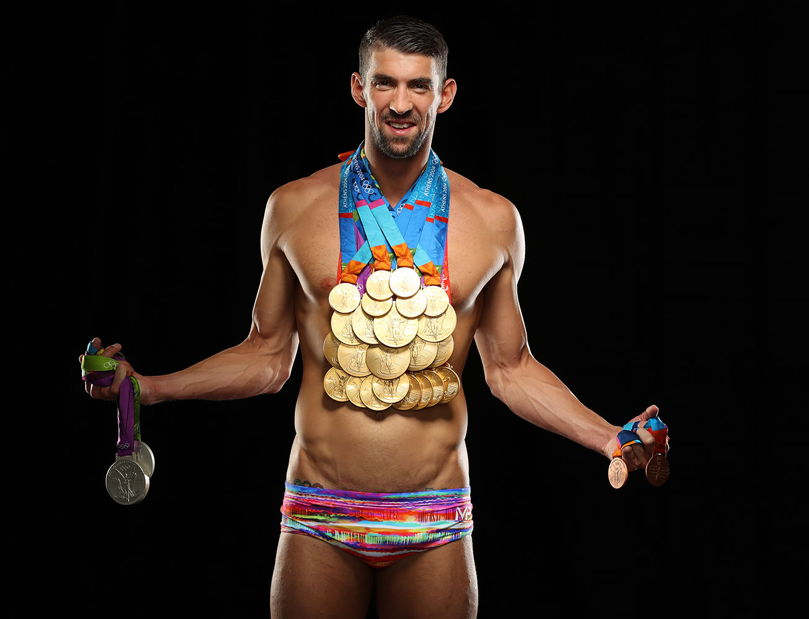
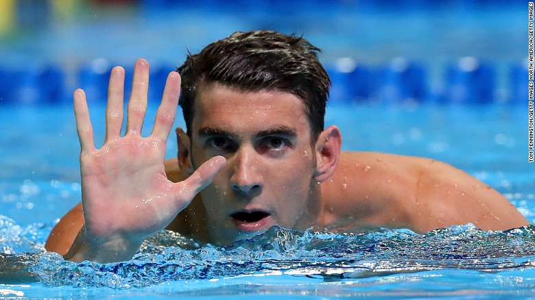

Biografia - Carreira
Phelps é reconhecido por seu grande êxito na natação, o que inclui uma extraordinária marca de nove medalhas nas Olimpíadas de Pequim em 2008, sendo todas de ouro (100m e 200m borboleta, 200m e 400m estilos, 4x100 estilos e 4x200 livres,200m livres e 4x100m livres), sendo assim o recorde de maior número de medalhas ganhas em uma única Olimpíada, que pertencia a Mark Spitz desde os Jogos de 1980[11]. Seus títulos internacionais, junto com seus vários recordes mundiais, fizeram com que ele fosse chamado o Nadador do Ano por quatro vezes, em 2003, 2004, 2006 e 2007.
Sydney 2000
Estreou-se aos 15 anos em Jogos Olímpicos, nas Olimpíadas de Sydney no ano 2000, tendo obtido o quinto lugar na final dos 200m borboleta. Cinco meses após os jogos, aos 15 anos e 9 meses de idade, bate o recorde desta mesma prova, tornando-se o mais novo nadador de todos os tempos a bater um recorde mundial de natação.
Atenas 2004
A posição dominante de Phelps trouxe comparações ao grande nadador Mark Spitz, que ganhou o recorde de sete medalhas de ouro nas Olimpíadas de 1972. Phelps teve a chance de quebrar o recorde de sete Spitz, competindo em oito provas: 200 m livre, 100 m borboleta, os 200 m borboleta, 200 m medley, 400 m medley, 4x100 m livre, 4x200 m livre, e no 4x100 m medley. No entanto, nos 4x100 m livre, a equipe americana só ganhou a medalha de bronze, e Phelps não conseguiu bater o recorde de Mark Spitz, que mais tarde viria a ser quebrado nas Olimpíadas de 2008, em Pequim. No entanto, ele conseguiu oito medalhas em uma Olimpíada, uma proeza só alcançada anteriormente pelo ginasta russo Alexander Dityatin, nos Jogos Olímpicos de 1980 em Moscou.
Pequim 2008
Phelps estabeleceu um novo recorde olímpico, nas competições eliminatórias dos 400m medley. Ele conseguiu a medalha de ouro na final da mesma prova nos jogos olímpicos, só que quebrou seu recorde das eliminatórias por quase dois segundos. Nesta edição dos jogos ele obteve sua única medalha de ouro individual em nado livre (200m) da carreira. Ao final de Pequim 2008, Phelps bateu o recorde de maior número de medalhas de ouro em uma só edição das Olimpíadas, conseguindo oito medalhas de ouro (em todas as finais que participou), assim superando o recorde de sete medalhas de ouro conquistadas por Mark Spitz na edição de Munique 1972.
Londres 2012
Em 2012 torna-se o atleta mais medalhado de sempre da história dos Jogos Olímpicos com um total de 22 medalhas obtidas em três Jogos Olímpicos e o primeiro a ganhar a mesma prova três vezes consecutivas, feito que repetiu por três vezes na prova de estafeta 4 x 200 metros livres, nos 200 metros estilos e nos 100 metros mariposa.